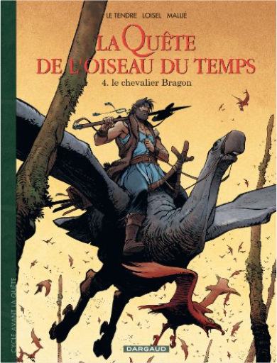
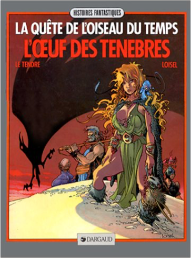

 la quête de l'oiseau du temps, avant la quête, tome 4 - le chevalier bragonLe Tendre, Loisel  2205063308  De l'héroïc fantasy pour ceux qui n'aiment pas l'héroïc fantasy. On y trouve des héros, mais ils sont bien vieux ou bien malhabiles au maniement de l'épée. D'ailleurs, les seuls véritables bretteurs de l'histoire finiront tous très mal. On y trouve aussi une très jolie fille, mais elle se révèlera n'être qu'une illusion. Pourtant, en apparence, les lois du genre sont respectées. Un chevalier, Bragon, part à la recherche de l'Oiseau du temps, seule créature capable d'empêcher Ramos le dieu maudit de quitter sa prison... Tout le talent de Le Tendre au scénario et de Loisel au dessin, est de respecter somptueusement l'imagerie du genre en en détournant le sens. Devant le succès de La Quête (4 volumes ou intégrale), les auteurs ont lancé une nouvelle série racontant la jeunesse des héros. Avec la promesse de retrouver un jour la belle Pelisse, évaporée à la fin du premier cycle. Lidwine (auteur du Dernier loup d'Oz chez Delcourt )a dessiné L'Ami Javin, premier tome du nouveau cycle. —Jean-Pierre Fuéri  De l'héroïc fantasy pour ceux qui n'aiment pas l'héroïc fantasy. On y trouve des héros, mais ils sont bien vieux ou bien malhabiles au maniement de l'épée. D'ailleurs, les seuls véritables bretteurs de l'histoire finiront tous très mal. On y trouve aussi une très jolie fille, mais elle se révèlera n'être qu'une illusion. Pourtant, en apparence, les lois du genre sont respectées. Un chevalier, Bragon, part à la recherche de l'Oiseau du temps, seule créature capable d'empêcher Ramos le dieu maudit de quitter sa prison... Tout le talent de Le Tendre au scénario et de Loisel au dessin, est de respecter somptueusement l'imagerie du genre en en détournant le sens. Devant le succès de La Quête (4 volumes ou intégrale), les auteurs ont lancé une nouvelle série racontant la jeunesse des héros. Avec la promesse de retrouver un jour la belle Pelisse, évaporée à la fin du premier cycle. Lidwine (auteur du Dernier loup d'Oz chez Delcourt )a dessiné L'Ami Javin, premier tome du nouveau cycle. —Jean-Pierre Fuéri  De l'héroïc fantasy pour ceux qui n'aiment pas l'héroïc fantasy. On y trouve des héros, mais ils sont bien vieux ou bien malhabiles au maniement de l'épée. D'ailleurs, les seuls véritables bretteurs de l'histoire finiront tous très mal. On y trouve aussi une très jolie fille, mais elle se révèlera n'être qu'une illusion. Pourtant, en apparence, les lois du genre sont respectées. Un chevalier, Bragon, part à la recherche de l'Oiseau du temps, seule créature capable d'empêcher Ramos le dieu maudit de quitter sa prison... Tout le talent de Le Tendre au scénario et de Loisel au dessin, est de respecter somptueusement l'imagerie du genre en en détournant le sens. Devant le succès de La Quête (4 volumes ou intégrale), les auteurs ont lancé une nouvelle série racontant la jeunesse des héros. Avec la promesse de retrouver un jour la belle Pelisse, évaporée à la fin du premier cycle. Lidwine (auteur du Dernier loup d'Oz chez Delcourt )a dessiné L'Ami Javin, premier tome du nouveau cycle. —Jean-Pierre Fuéri  la quête de l'oiseau du temps, tome 4 : l'oeuf des ténèbresLe Tendre, Loisel De l'héroïc fantasy pour ceux qui n'aiment pas l'héroïc fantasy. On y trouve des héros, mais ils sont bien vieux ou bien malhabiles au maniement de l'épée. D'ailleurs, les seuls véritables bretteurs de l'histoire finiront tous très mal. On y trouve aussi une très jolie fille, mais elle se révèlera n'être qu'une illusion. Pourtant, en apparence, les lois du genre sont respectées. Un chevalier, Bragon, part à la recherche de l'Oiseau du temps, seule créature capable d'empêcher Ramos le dieu maudit de quitter sa prison... Tout le talent de Le Tendre au scénario et de Loisel au dessin, est de respecter somptueusement l'imagerie du genre en en détournant le sens. Devant le succès de La Quête (4 volumes ou intégrale), les auteurs ont lancé une nouvelle série racontant la jeunesse des héros. Avec la promesse de retrouver un jour la belle Pelisse, évaporée à la fin du premier cycle. Lidwine (auteur du Dernier loup d'Oz chez Delcourt )a dessiné L'Ami Javin, premier tome du nouveau cycle. —Jean-Pierre Fuéri  Raya, la fille du prince sorcier, a été tuée lors d'un traquenard préparé par le sinistre ordre du Signe alors qu'elle était sous la protection du chevalier Bragon et de son élève Bulrog. Ces derniers ont survécu, mais Bragon est affaibli par une chute qui l'a rendu amnésique, et son esprit est contrôlé par un vieil homme qui appartient à l'ordre du Signe. Bulrog a réussi à rejoindre la famille de Bragon, il doit maintenant prévenir Mara et son père ? et, pour cela, éviter les espions qui ont manigancé ce piège et qui entourent le prince et sa fille. Bientôt, le bruit court que Bragon a rejoint l'ordre, et la peur envahit le pays d'Akbar... |

Julien
Collection Total:
2 005 Items
2 005 Items
Last Updated:
Jun 23, 2023
Jun 23, 2023


 Made with Delicious Library
Made with Delicious Library